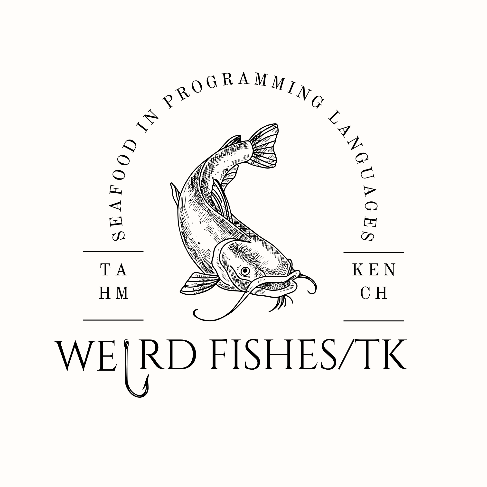

O pacto com Tahm Kench soa exatamente como os arpejos hipnóticos de Weird Fishes. No início, a música te envolve em uma atmosfera flutuante e quase reconfortante, da mesma forma que o demônio dos rios surge diante dos desesperados, oferecendo uma fuga milagrosa para suas obsessões. Você aceita o convite e mergulha de cabeça no oceano profundo de seus próprios desejos.
No entanto, conforme a melodia avança, a ilusão de liberdade se desfaz. A batida constante e as guitarras entrelaçadas transformam a jornada em uma descida inevitável rumo ao fundo do poço. Quando a música atinge seu silêncio final e evoca a imagem de ser consumido nas profundezas, o preço do pacto é cobrado: o sorriso de Tahm Kench se fecha, e a vítima descobre, tarde demais, que os "peixes estranhos" que a devoram são as consequências de sua própria ambição.